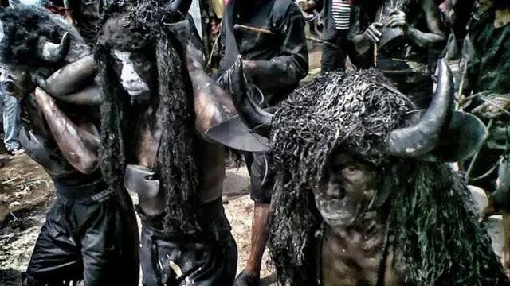
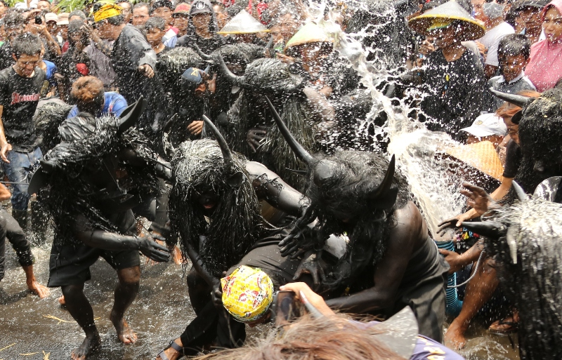
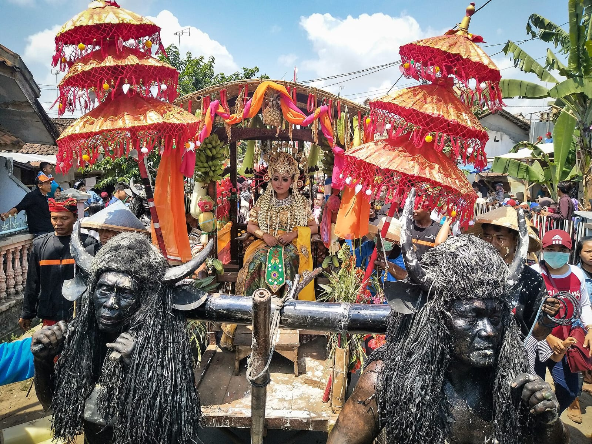
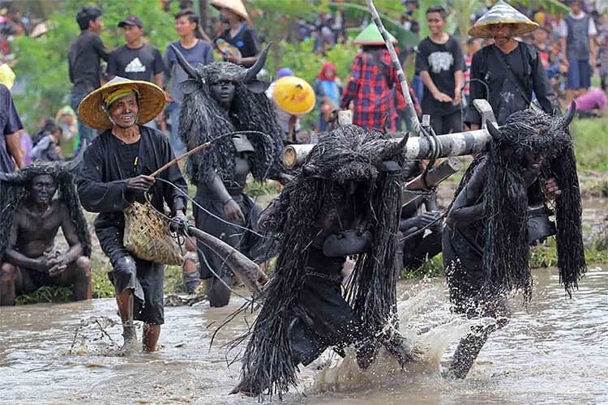

Sejarah
Kebo-Keboan merupakan tradisi adat yang berasal dari Desa Alasmalang, Kabupaten Banyuwangi. Tradisi ini sudah diwariskan dari generasi ke generasi dan menjadi bagian penting dari kehidupan masyarakat setempat.
Awalnya, Kebo-Keboan dilakukan sebagai upaya masyarakat untuk memohon perlindungan dari berbagai penyakit dan gangguan yang dapat mengancam hasil pertanian. Seiring waktu, tradisi ini berkembang menjadi simbol rasa syukur sekaligus warisan budaya yang tetap dijaga hingga sekarang.
Makna Filosofis
Di balik kemeriahannya, Kebo-Keboan memiliki makna yang mendalam. Sosok kerbau dipilih karena dianggap sebagai sahabat petani yang membantu mengolah sawah dan mendukung kehidupan masyarakat agraris.
Nilai-Nilai yang Terkandung:
- Rasa syukur atas hasil panen yang diperoleh
- Kerja keras dan semangat pantang menyerah
- Kebersamaan serta gotong royong antarwarga
- Harmoni antara manusia, alam, dan budaya yang diwariskan leluhur
Prosesi Budaya
Prosesi Kebo-Keboan biasanya diawali dengan doa bersama yang dipimpin oleh tokoh adat dan masyarakat setempat. Setelah itu, beberapa warga akan berdandan menyerupai kerbau dengan tubuh yang dicat hitam serta mengenakan tanduk buatan.
Para "kerbau" kemudian mengikuti arak-arakan mengelilingi desa sambil menampilkan gerakan yang meniru perilaku kerbau di sawah. Selanjutnya dilakukan ritual membajak sawah secara simbolis sebagai harapan agar hasil pertanian tetap subur dan melimpah.
Fakta Menarik
Tradisi Paling Unik
Kebo-Keboan Alasmalang merupakan salah satu tradisi budaya paling unik di Banyuwangi dengan warga berdandan seperti kerbau.
Bulan Suro
Tradisi ini biasanya digelar setiap bulan Suro dalam kalender Jawa.
Daya Tarik Wisata
Menarik perhatian banyak wisatawan dan fotografer karena keunikan visualnya.
Galeri




